Light or dark
Dark or light in one click, and the browser remembers the choice.
Camelopard at work on a sprint board: views, search, filters and the detail of each issue.
Dark or light in one click, and the browser remembers the choice.
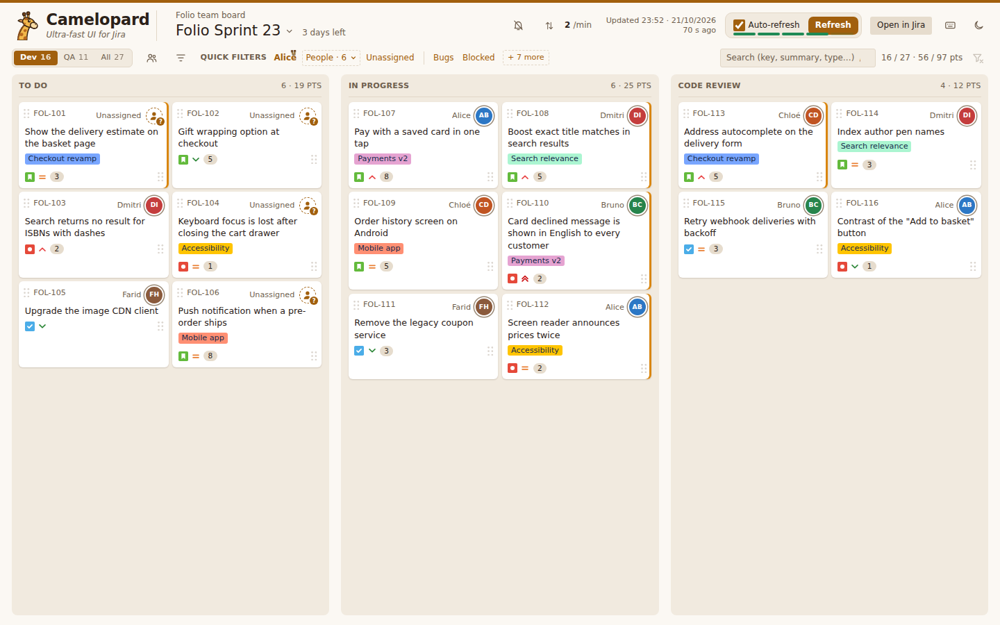
A board with many columns is split into views, Dev, QA or All, each with its own key and its issue count.
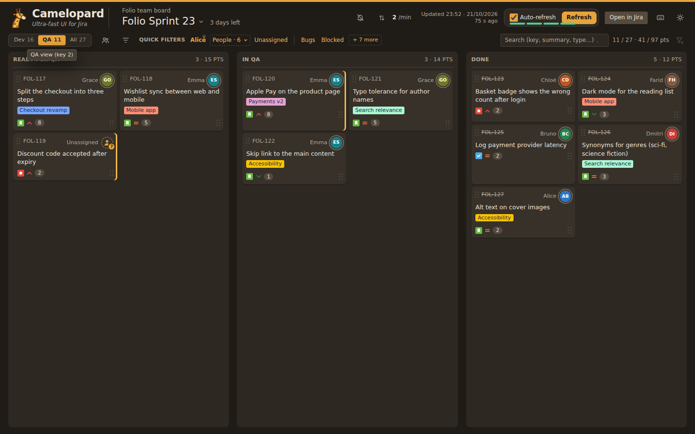
Every word narrows the board while it is typed: key, summary, assignee, epic, labels, type, status or priority.
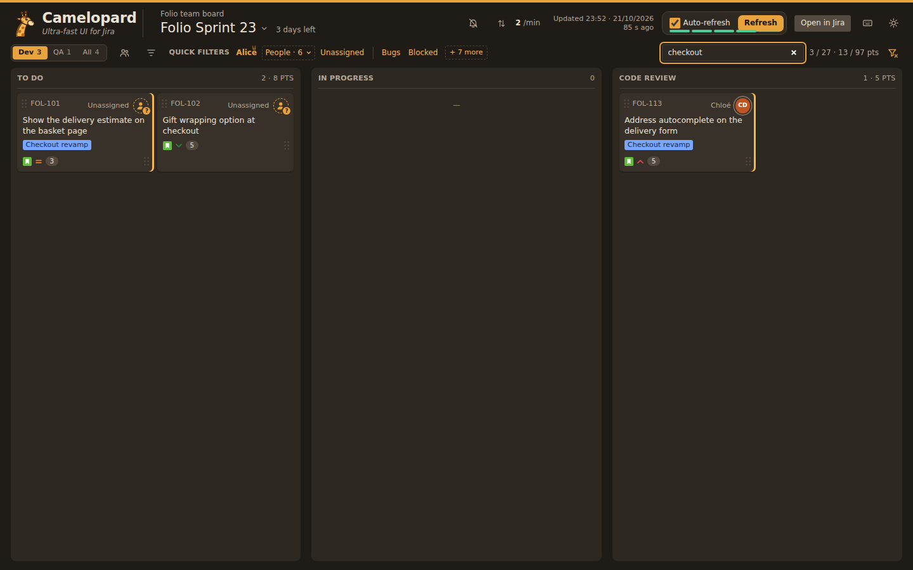
Jira's own quick filters, one click each, plus a person picker. The choice is kept in the address, so a reload or a shared link shows the same thing.
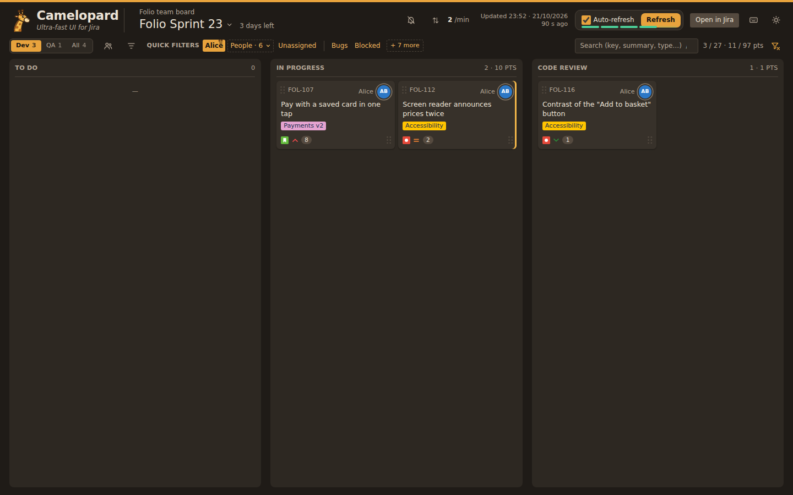
Status, reporter, type, priority and epic in one panel, each value counted against the other criteria.
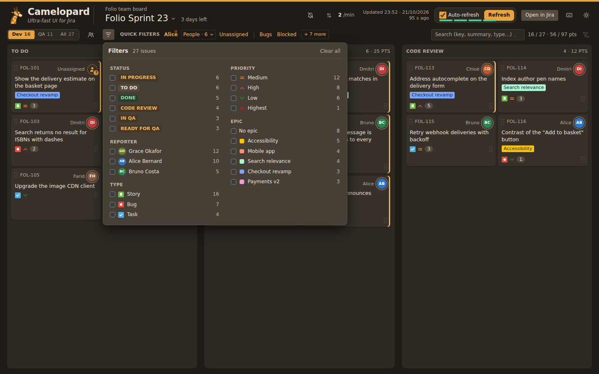
Pick a reporter and the board keeps only the issues they raised.
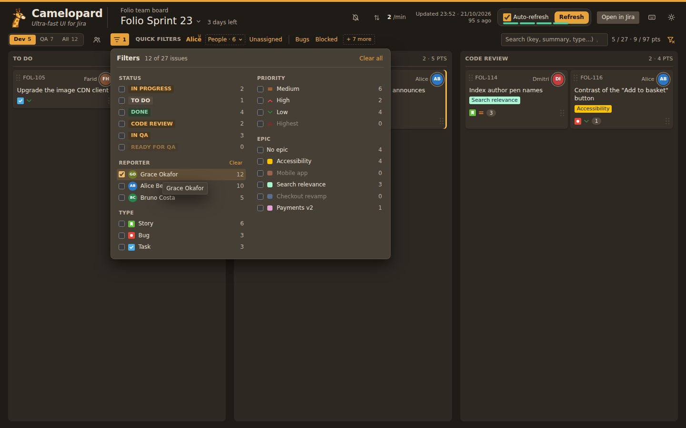
Click a card: its fields, description, links, attachments, comments and history open beside the board, without leaving it.
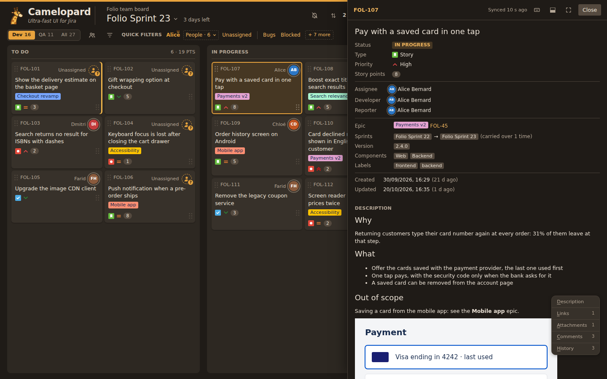
The panel scrolls apart from the board, and its index jumps straight to links, attachments, comments or history.
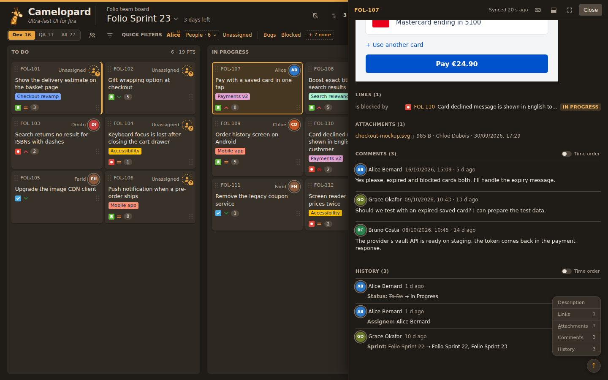
On a wide screen the detail can sit under the board instead, in three columns.
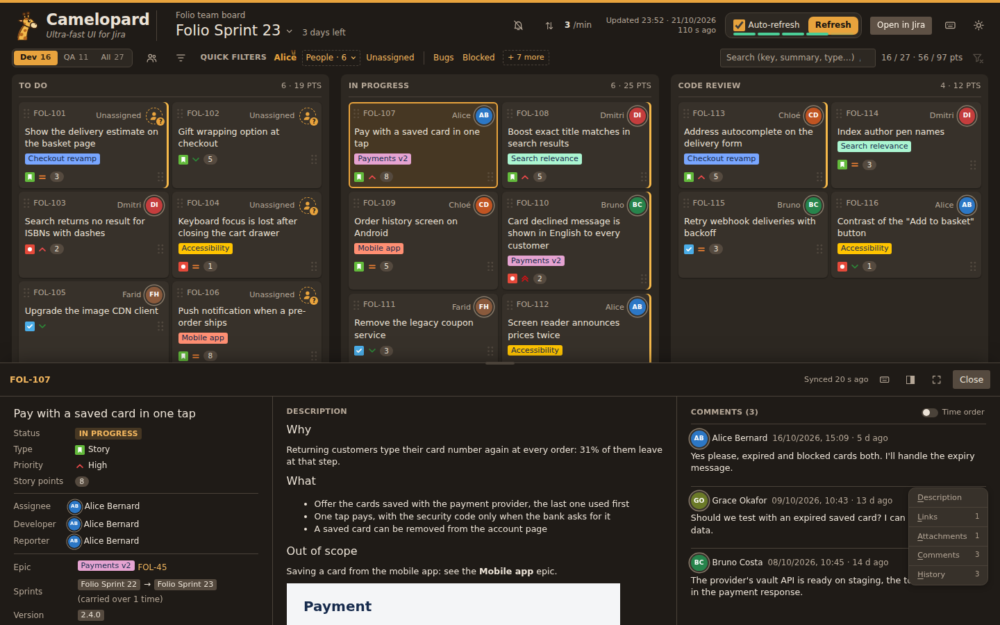
The sprint's name opens the list of active and planned sprints with their timing. A planned sprint is laid out in the same columns.
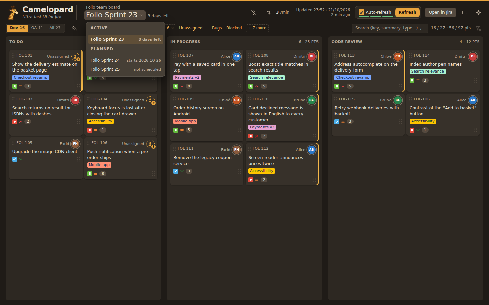
A board of sixteen columns and three hundred issues stays readable: each role picks the columns it works on as a view, here the supplier's, and filters narrow it further. The board's owner decided its layout in Jira; how you see it is up to you, in your own configuration, with no Jira admin rights needed.
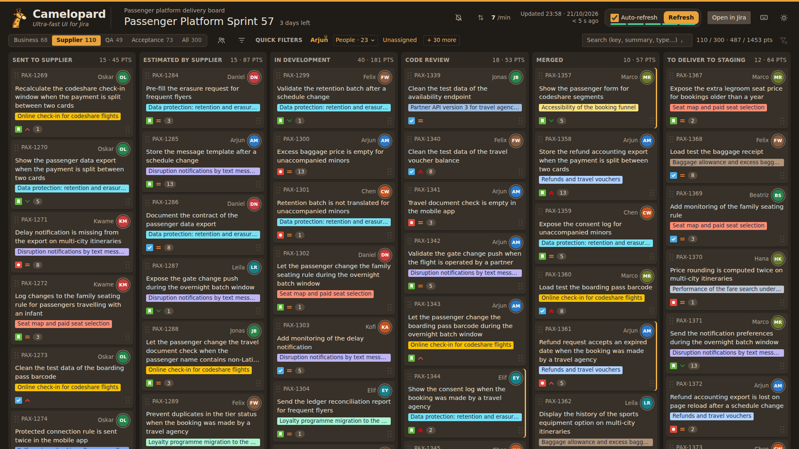
However large the board, an issue opens instantly: everything comes from the cache.
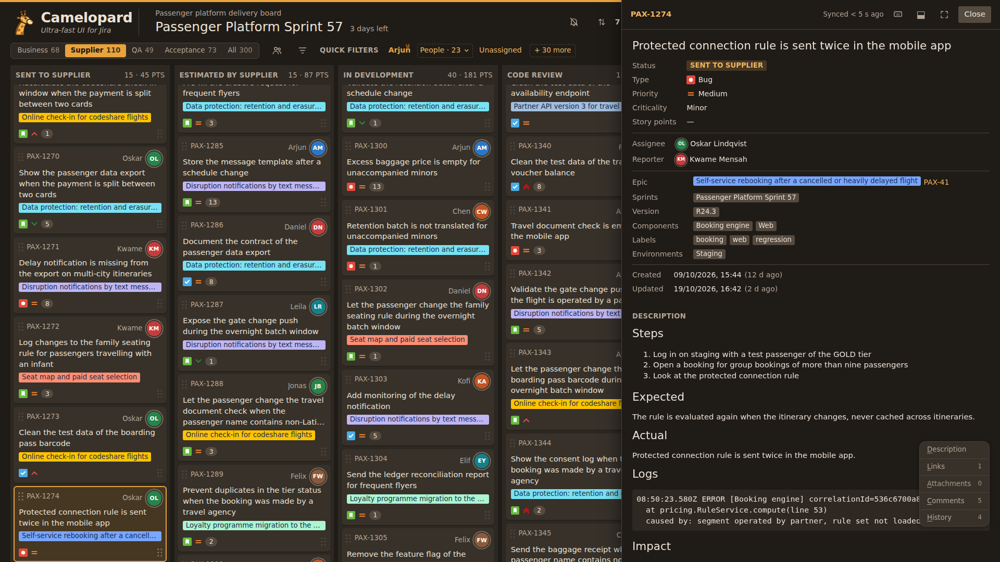